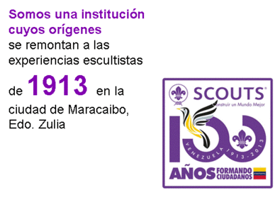
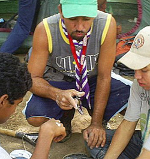

Tenemos como meta "Construir un Mundo Mejor", a través del desarrollo de jóvenes críticos, aptos y capaces de vivir en comunidad y con clara orientación democrática.
Basamos todo nuestro trabajo en la agrupación libre y voluntaria de adultos, comprometidos con la aplicación del Método Scout, ideados por el Fundador Robert Baden-Powell en 1907.
Basamos todo nuestro trabajo en la agrupación libre y voluntaria de adultos, comprometidos con la aplicación del Método Scout, ideados por el Fundador Robert Baden-Powell en 1907.
Los Principios Scouts, universalmente aceptados, son:
1.- Adhesión a principios espirituales, lealtad a la religión que los expresa y aceptación de los deberes que resulten de ello.
2.- Lealtad para con su propio país en armonía con la promoción de la paz, la comprensión y la cooperación en el plano local, nacional e internacional.
3.- Responsabilidad por su propio desarrollo.